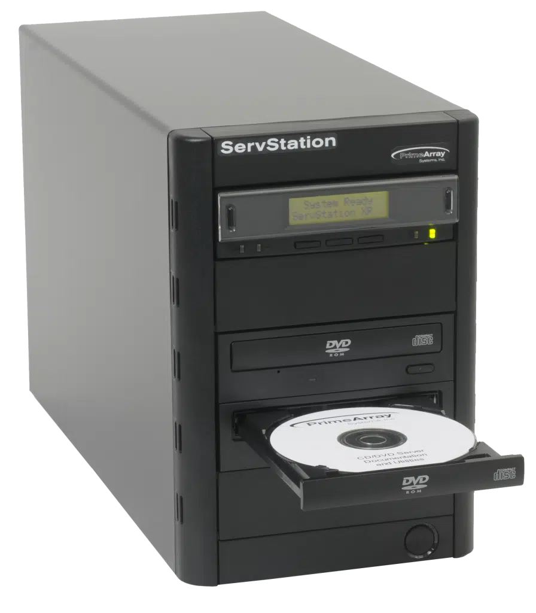

Unidades Ópticas
Las unidades ópticas son dispositivos de almacenamiento que utilizan tecnología óptica para leer y escribir datos en discos ópticos. Estos incluyen CD, DVD y Blu-ray. Aunque han sido esenciales en el pasado, su importancia ha disminuido con el tiempo debido al avance de otras tecnologías de almacenamiento.
Tipos de Unidades Ópticas:
- CD-ROM:
Introducido en 1982 por Sony y Philips, el CD-ROM fue inicialmente utilizado para almacenar música. Pronto se convirtió en una forma estándar de distribución de software y datos. Su capacidad inicial era de 650 MB, y se popularizó en la década de 1990.
Utiliza un láser rojo para leer datos almacenados en forma de "pits" y "lands" en la superficie reflectante del disco. Es de solo lectura, lo que significa que los datos no pueden ser modificados ni sobrescritos.

- DVD-ROM:
Introducido en 1995, el DVD-ROM mejoró la capacidad de almacenamiento y calidad de video en comparación con el CD-ROM. Rápidamente se convirtió en el estándar para películas en video y distribución de software.
Utiliza un láser rojo más corto que el CD-ROM para leer datos almacenados en una estructura similar de "pits" y "lands". Al igual que el CD-ROM, es de solo lectura.
- BLU-RAY:
Desarrollado a principios de la década de 2000 por un consorcio liderado por Sony, el Blu-ray superó las limitaciones de capacidad y calidad de video del DVD. Introducido en 2006, se convirtió en la elección principal para contenido de alta definición.
Utiliza un láser azul-violeta de menor longitud de onda para leer datos almacenados en pits y lands. La capacidad de almacenamiento es significativamente mayor, permitiendo contenido de alta definición y 4K. Es de solo lectura.
¿Que se puede decir al respecto?
- Capacidad de almacenamiento:
- CD-ROM: Ofrece una capacidad limitada, generalmente alrededor de 700 MB.
- DVD-ROM: Proporciona mayor capacidad que un CD-ROM, con opciones de una sola capa (4.7 GB) y doble capa (hasta 9 GB).
- BLU-RAY: Ofrece la mayor capacidad de almacenamiento, desde 25 GB en un solo disco hasta opciones de múltiples capas que pueden llegar a 100 GB o más.
- Calidad de video:
- CD-ROM: Limitado a contenido estándar y no es adecuado para video de alta definición.
- DVD-ROM: Permite video de mayor calidad en comparación con CD-ROM, pero no alcanza la calidad de alta definición completa. (756x576 píxeles)
- BLU-RAY: Diseñado para contenido multimedia de alta definición, ofreciendo una calidad de video superior, incluso en resoluciones 4K
- Versatibilidad:
- CD-ROM: Utilizado principalmente para distribuir música, software y archivos de datos estándar.
- DVD-ROM: Aumenta la versatilidad, siendo adecuado para distribuir contenido de video de mayor calidad y software más extenso.
- BLU-RAY: La opción más versátil, ideal para contenido multimedia en alta definición, incluyendo películas, juegos y software avanzado.
- Uso Actual:
- CD-ROM: Su uso ha disminuido significativamente, siendo reemplazado por tecnologías más avanzadas.
- DVD-ROM: Aún en uso para la distribución de contenido multimedia y algunos programas de software. Pero tambien se ha reducido gracias a otras opciones de portabilidad.
- BLU-RAY: Ampliamente utilizado para películas en alta definición, juegos de consola y almacenamiento de grandes cantidades de datos.
Cabe destacar que estos tres dispositivos opticos han sido reducidos por el avance de tecnologia, al menos para computador ya no es necesario tener estos formatos, por ejemplo en los juegos, lo puedes descargar totalmente online sin necesidad de algo fisico.
¿Por qué no es un componente crítico?
A medida que la tecnología de almacenamiento ha evolucionado, las unidades ópticas han perdido relevancia en comparación con opciones más rápidas y de mayor capacidad, como las unidades de estado sólido (SSD) y los discos duros convencionales. La capacidad limitada de almacenamiento, velocidades de transferencia más lentas y la prevalencia de otras opciones de distribución de contenidos, como descargas en línea y servicios de transmisión, han contribuido a su declive.